Experience
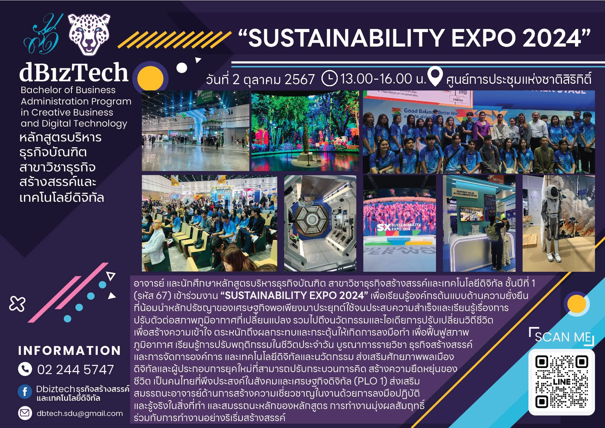
SUSTAINABILITY EXPO 2024
พ.ศ. 2567
เข้าร่วมงาน "SUSTAINABILITY EXPO 2024" เพื่อเรียนรู้องค์กรต้นแบบด้านความยั่งยืน ที่น้อมน้ำหลักปรัชญาของเศรษฐกิจพอเพียงมาประยุกต์ใช้จนประสบความสำเร็จและเรียนรู้เรื่องการปรับตัวต่อสภาพภูมิอากาศที่เปลี่ยนแปลง รวมไปถึงนวัตกรรมและไอเดียการปรับเปลี่ยนวิถีชีวิตเพื่อสร้างความเข้าใจ ตระหนักถึงผลกระทบและกระตุ้นให้เกิดการลงมือทำ เพื่อฟื้นฟูสภาพ INFORMATION ภูมิอากาศ เรียนรู้การปรับพฤติกรรมในชีวิตประจำวัน บูรณาการรายวิชา ธุรกิจสร้างสรรค์และการจัดการองค์การ และเทคโนโลยีดิจิทัลและนวัตกรรม ส่งเสริมศักยภาพพลเมือง ดิจิทัลและผู้ประกอบการยุคใหม่ที่สามารถปรับกระบวนการคิด สร้างความยืดหยุ่นของ ชีวิต เป็นคนไทยที่พึงประสงค์ในสังคมและเศรษฐกิจดิจิทัล
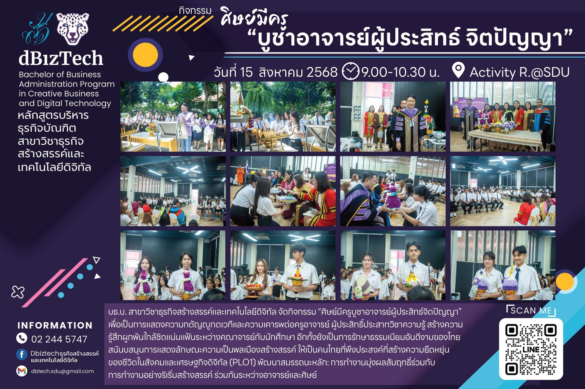
กิจกรรมศิษย์มีครู"บูชาอาจารย์ผู้ประสิทธ์ จิตปัญญา"
พ.ศ. 2567-2569
เข้าร่วมกิจกรรม "ศิษย์มีครูบูซาอาจารย์ผู้ประสิทธ์ จิตปัญญา" เพื่อเป็นการแสดงความกตัญญูกตเวทีและความเคารพต่อครูอาจารย์ ผู้ประสิทธิ์ประสาทวิชาความรู้สร้างความรู้สึกผูกพันใกล้ชิดแน่นแฟ้นระหว่างคณาจารย์กับนักศึกษา
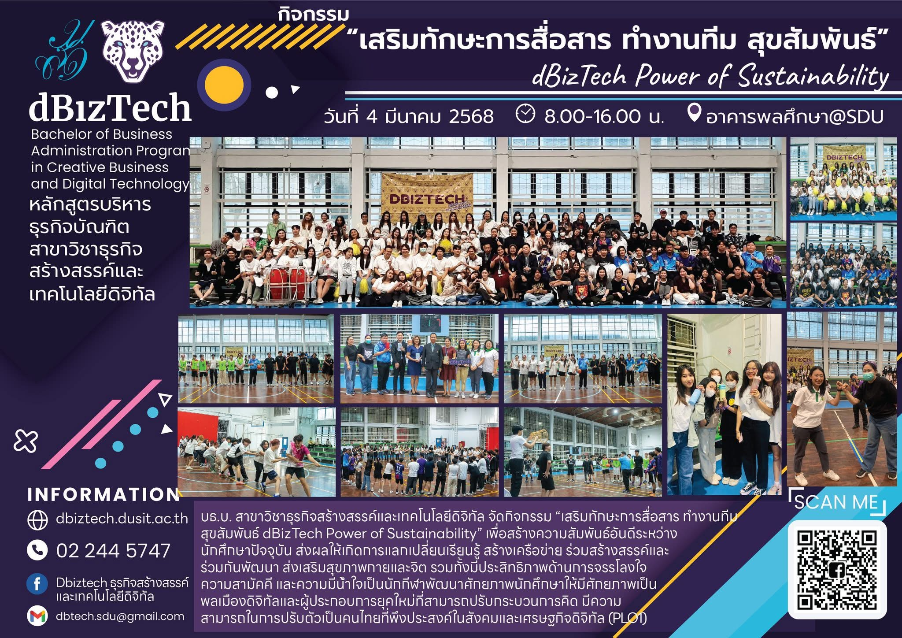
dBizTech Sport Day
พ.ศ. 2567-2569
เข้าร่วมกิจกรรม dBizTech Sport Day 2026 เพื่อสร้างความสัมพันธ์อันดีระหว่างนักศึกษา ปัจจุบัน ส่งผลให้เกิดการแลกเปลี่ยนเรียนรู้ สร้างเครือข่าย ร่วมสร้างสรรค์และร่วมกันพัฒนา ส่งเสริมสุขภาพกายและจิต รวมทั้งมีประสิทธิภาพด้านการจรรโลงใจ ความสามัคคี และความมีน้ำใจเป็นนักกีฬา
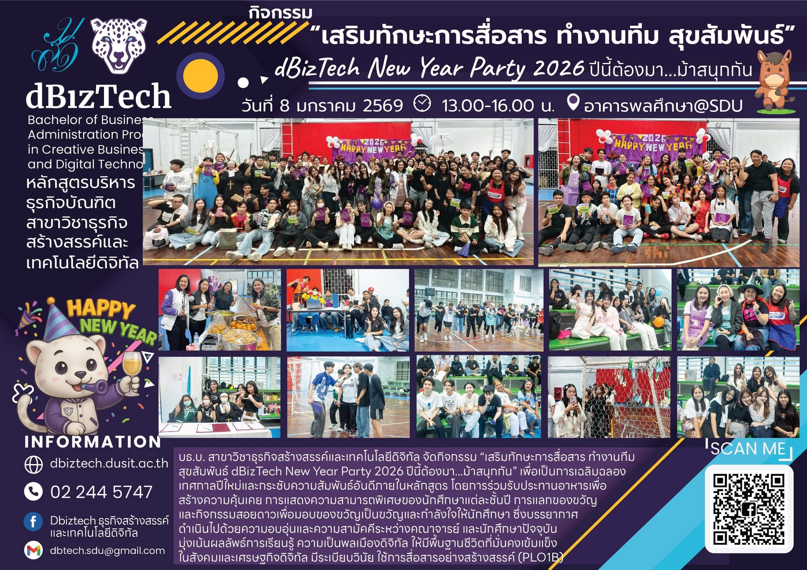
dBizTech New Year Party 2026
พ.ศ. 2567-2568
เข้าร่วมกิจกรรม BizTech New Year Party เพื่อเป็นการเฉลิมฉลองเทศกาลปีใหม่และกระชับความสัมพันธ์อันดีภายในหลักสูตร โดยการร่วมรับประทานอาหารเพื่อสร้างความคุ้นเคย การแสดงความสามารถพิเศษของนักศึกษาแต่ละชั้นปี การแลกของขวัญและกิจกรรมสอยดาวเพื่อมอบของขวัญเป็นขวัญและกำลังใจให้นักศึกษา
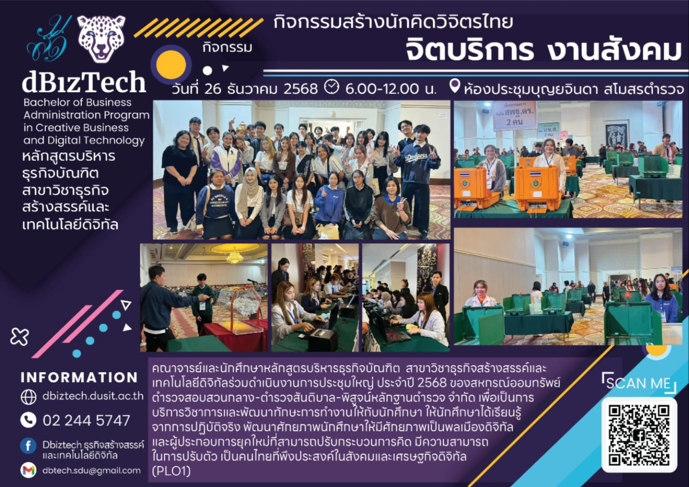
กิจกรรมสร้างนักคิดวิจิตรไทย จิตบริการ งานสังคม
พ.ศ. 2568
เข้าร่วมดำเนินงานการประชุมใหญ่ ประจำปี 2568 ข่องสหกรณ์ออมทรัพย์ตำรวจสอบสวนกลาง-ตำรวจสันติบาล-พิสุจน์หลักฐานตำรวจ จำกัด เพื่อเป็นการบริการวิชาการและพัฒนาทักษะการทำงานให้กับนักศึกษา

iCreator Conference2025
พ.ศ. 2568
เข้าร่วมงาน "Creator Conference 2025" เพื่อรับฟังประสบการณ์จากคอนเทนต์ครีเอทเตอร์ จุดประกายความคิดสร้างสรรค์สร้างแรงบันดาลใจสู่การเป็นคอนเทอร์ครีเอเตอร์ยุคใหม่
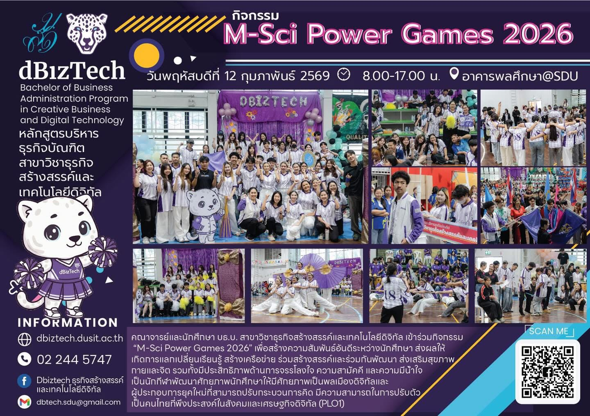
M-Sci Power Games 2026
พ.ศ. 2569
เข้าร่วมกิจกรรม "M-Sci Power Games 2026" เพื่อสร้างความสัมพันธ์อันดีระหว่างนักศึกษา ส่งผลให้เกิดการแลกเปลี่ยนเรียนรู้ สร้างเครือข่าย ร่วมสร้างสรรค์และร่วมกันพัฒนา ส่งเสริมสุขภาพกายและจิต รวมทั้งมีประสิทธิภาพด้านการจรรโลงใจ ความสามัคคี และความมีน้ำใจ
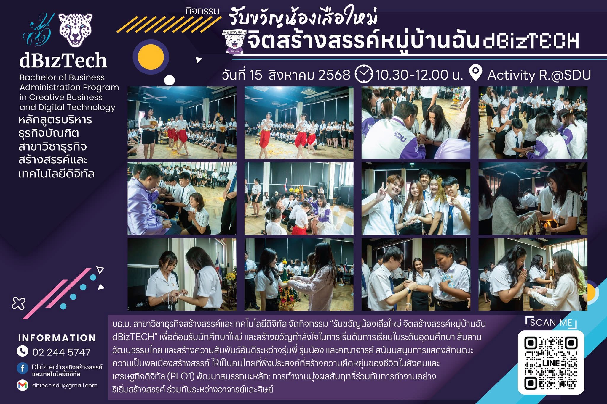
จิตสร้างสรรค์หมู่บ้านฉัน dGizTECH
พ.ศ. 2567-2569
เข้าร่วมกิจกรรม "รับขวัญน้องเสือใหม่ จิตสร้างสรรค์หมู่บ้านฉัน dBizTECH เพื่อต้อนรับนักศึกษาใหม่ และสร้างขวัญกำลังใจในการเริ่มต้นการเรียนในระดับอุดมศึกษา สืบสาน วัฒนธรรมไทย และสร้างความสัมพันธ์อันดีระหว่างรุ่นพี่ รุ่นน้อง และคณาจารย์
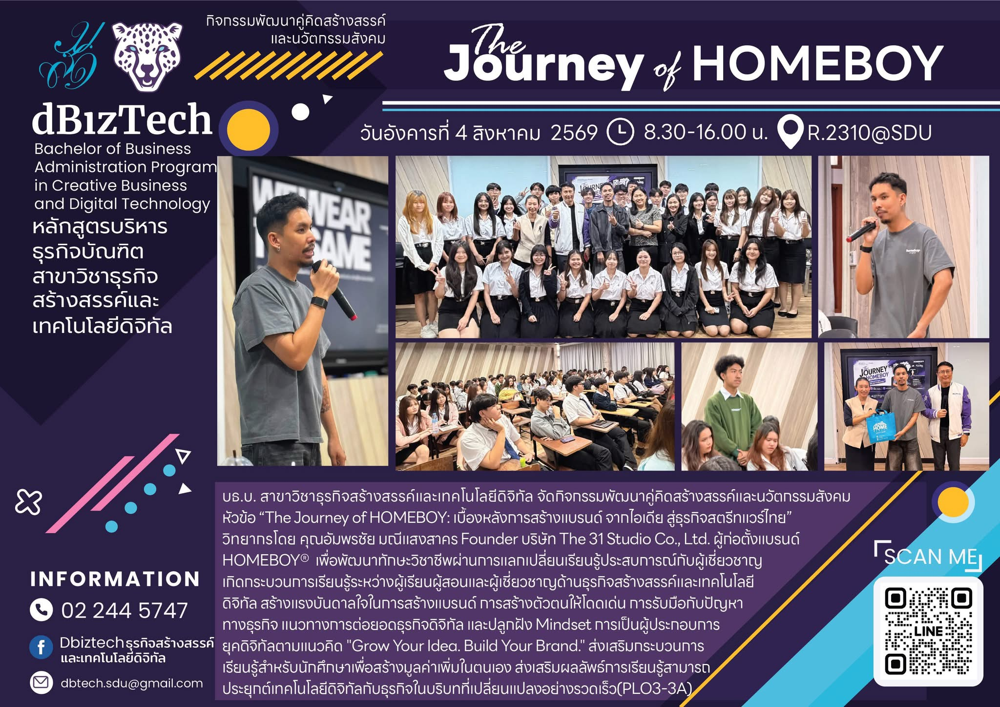
Journey of HOMEBOY
พ.ศ.2569
จัดกิจกรรมพัฒนาคู่คิดสร้างสรรค์และนวัตกรรมสังคม หัวข้อ "The Journey of HOMEBOY: เบื้องหลังการสร้างแบรนด์ จากไอเดีย สู่ธุรกิจสตรีทแวร์ไทย" วิทยากรโดย คุณอัมพรชัย มณีแสงสาคร Founder บริษัท The 31 Studio Co., Ltd. ผู้ก่อตั้งแบรนด์ HOMEBOY® เพื่อพัฒนาทักษะวิชาชีพผ่านการแลกเปลี่ยนเรียนรู้ประสบการณ์กับผู้เชี่ยวชาญ
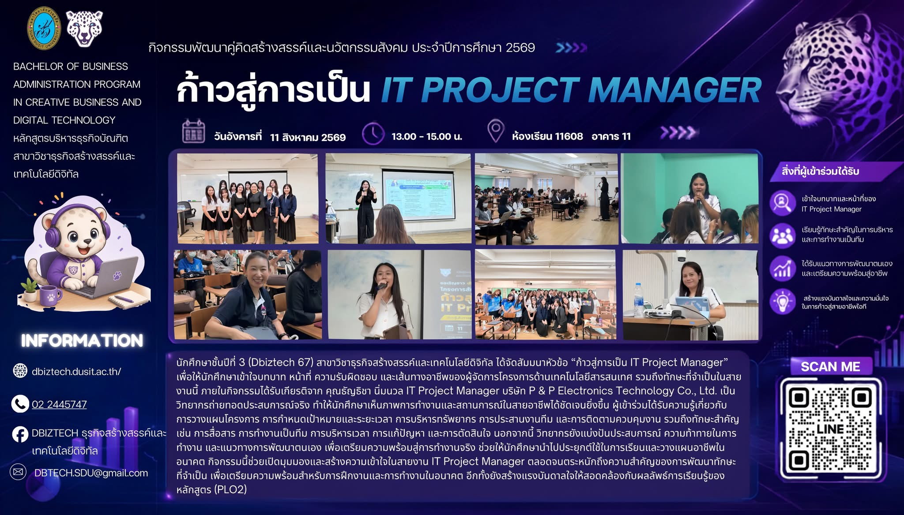
ก้าวสู่การเป็น IT PROJECT MANAGER
พ.ศ.2569
เป็นผู้จัดสัมมนาหัวข้อ "ก้าวสู่การเป็น IT Project Manager"เพื่อให้นักศึกษาเข้าใจบทบาท หน้าที่ ความรับผิดชอบ และเส้นทางอาชีพของผู้จัดการโครงการด้านเทคโนโลยีสารสนเทศ รวมถึงทักษะที่จำเป็นในสายงานนี้ ภายในกิจกรรมได้รับเกียรติจาก คุณธัญชิชา นิ่มนวล IT Project Manager บริษัท P & P Electronics Technology Co., Ltd. เป็น วิทยากรถ่ายทอดประสบการณ์จริง ทำให้นักศึกษาเห็นภาพการทำงานและสถานการณ์ในสายอาชีพได้ชัดเจนยิ่งขึ้น
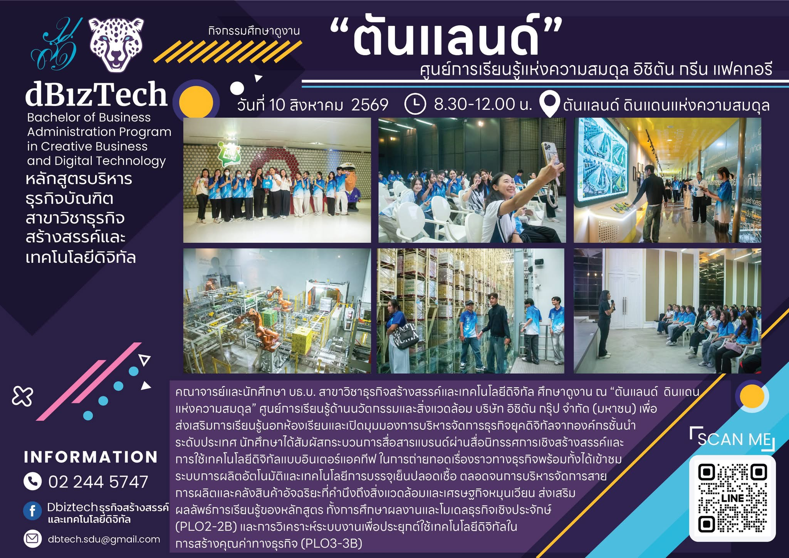
กิจกรรมศึกษาดูงาน”ตันแลนด์“ศูนย์การเรียนรู้แห่งความสมดุล อิซิตัน กรีน แฟคทอรี
พ.ศ.2569
ศึกษาดูงาน ณ "ต้นแลนด์ ดินแดนแห่งความสมดุล" ศูนย์การเรียนรู้ด้านนวัตกรรมและสิ่งแวดล้อม บริษัท อิซิตัน ทรุ๊ป จำกัด (มหาชน) เพื่อ ส่งเสริมการเรียนรู้นอกห้องเรียนและเปิดมุมมองการบริหารจัดการธุรกิจยุคดิจิทัลจากองค์กรชั้นนำระดับประเทศ
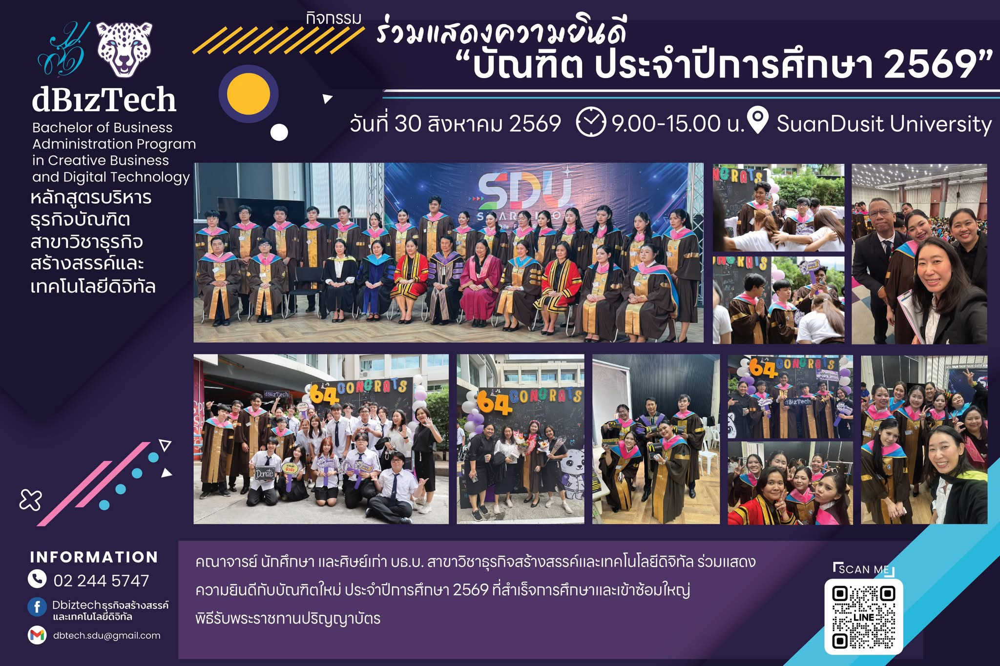
กิจกรรมร่วมแสดงความยินดี"บัณฑิต ประจำปีการศึกษา 2569"
พ.ศ.2569
ร่วมแสดงความยินดีกับบัณฑิตใหม่ ประจำปีการศึกษา 2569 ที่สำเร็จการศึกษาและเข้าซ้อมใหญ่พิธีรับพระราชทานปริญญาบัตร
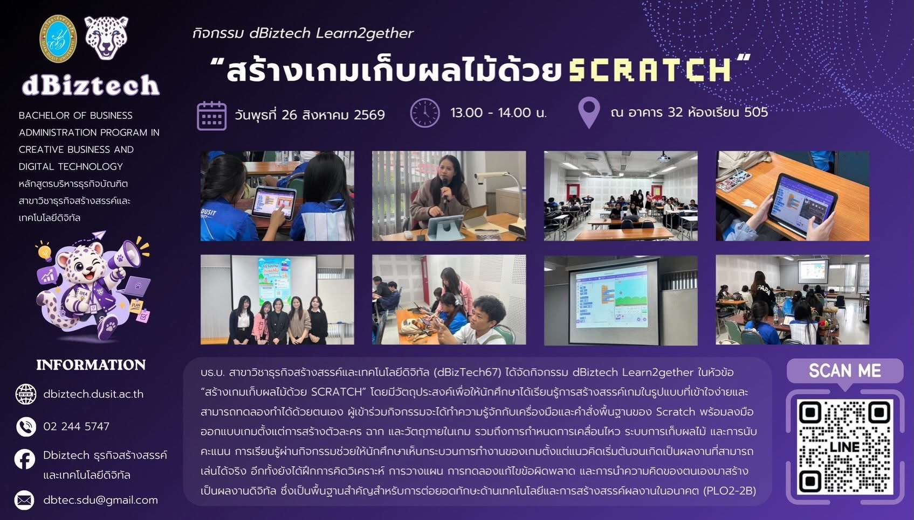
กิจกรรม dBiztech Learn2gether "สร้างเกมเก็บผลไม้ด้วย SCRATCH"
พ.ศ.2569
เป็นผู้จัดกิจกรรม dBiztech Learn2gether ในหัวข้อ"สร้างเกมเก็บผลไม้ด้วย SCRATCH" โดยมีวัตถุประสงค์เพื่อให้นักศึกษาได้เรียนรู้การสร้างสรรค์เกมในรูปแบบที่เข้าใจง่ายและสามารถทดลองทำได้ด้วยตนเอง ผู้เข้าร่วมกิจกรรมจะได้ทำความรู้จักกับเครื่องมือและคำสั่งพื้นฐานของ Scratch พร้อมลงมือออกแบบเกมตั้งแต่การสร้างตัวละคร ฉาก และวัตถุภายในเกม รวมถึงการกำหนดการเคลื่อนไหว ระบบการเก็บผลไม้ และการนับคะแนน
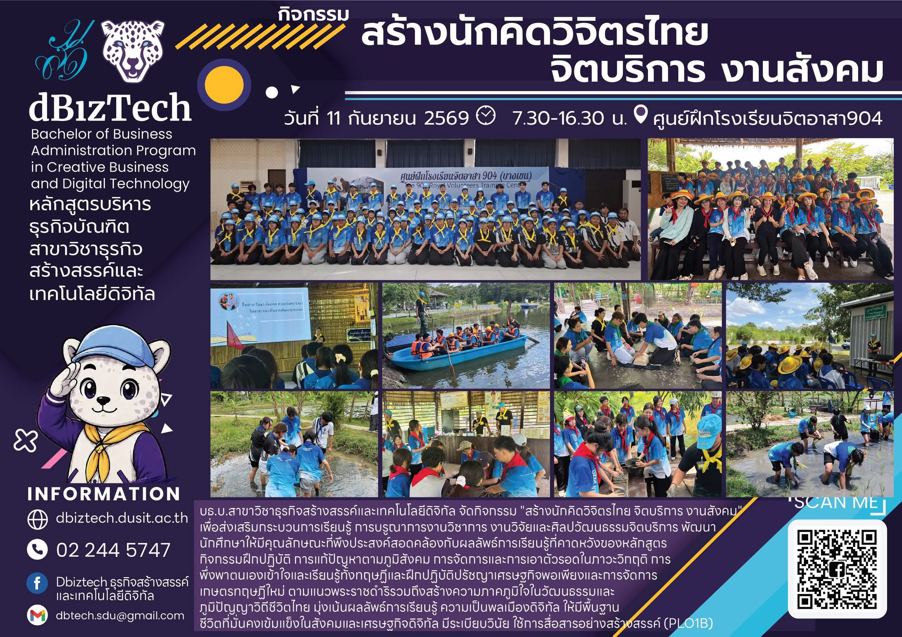
กิจกรรมสร้างนักคิดวิจิตรไทย จิตบริการ งานสังคม
พ.ศ.2569
เป็นผู้จัดกิจกรรม "สร้างนักคิดวิจิตรไทย จิตบริการ งานสังคม"เพื่อส่งเสริมกระบวนการเรียนรู้ การบรุณาการงานวิชาการ งานวิจัยและศิลปวัฒนธรรมจิตบริการ พัฒนา นักศึกษาให้มีคุณลักษณะที่พึงประสงค์สอดคล้องกับผลลัพธ์การเรียนรู้ที่คาดหวังของหลักสูตร